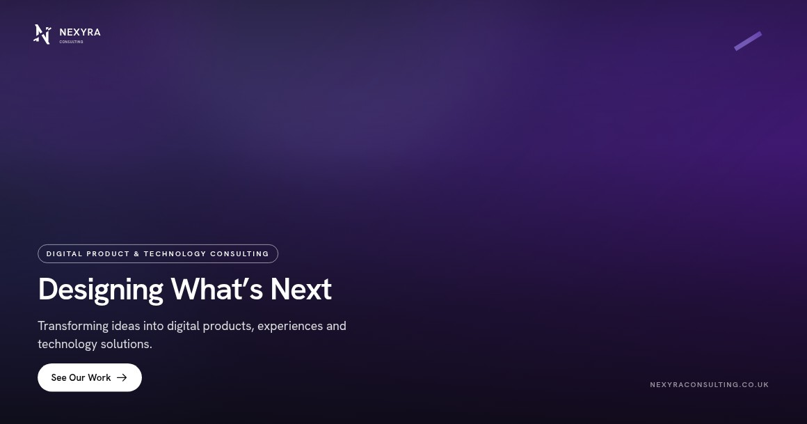
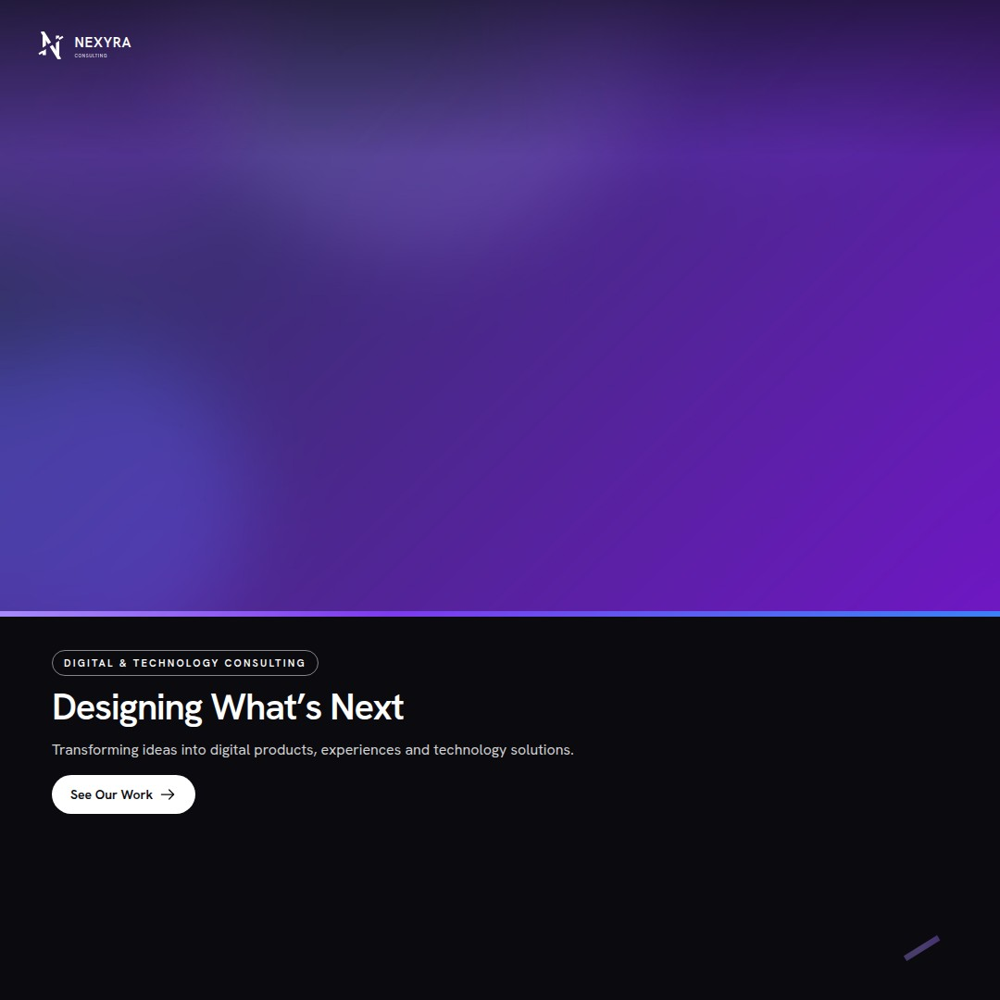
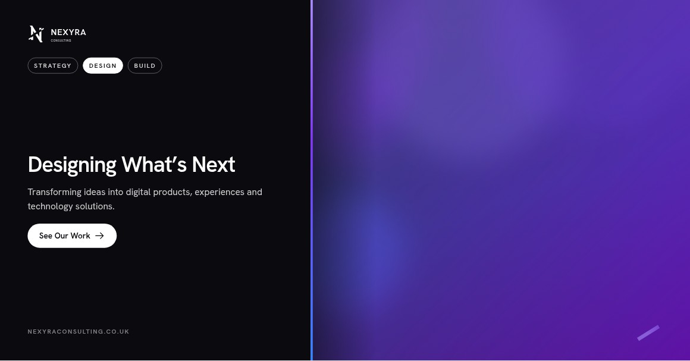

Facebook
1200 × 630 px · shared-link / feed post
Full-bleed photo with a bottom scrim, headline, supporting copy and CTA — sized for Facebook's link-preview and feed image ratio.

Three fully branded, ready-to-edit templates built from the Nexyra Consulting brand guidelines — one each for Facebook, Instagram and LinkedIn. Edit copy and swap in your own photo or video directly in the browser, or open the source PSD in Photoshop.

Full-bleed photo with a bottom scrim, headline, supporting copy and CTA — sized for Facebook's link-preview and feed image ratio.

Photo up top, an Ink content panel below with a signature-gradient divider — a distinct split layout built for the square grid.

An enterprise-friendly split panel with the Strategy / Design / Build segmented control, paired with a duotone-tinted photo.